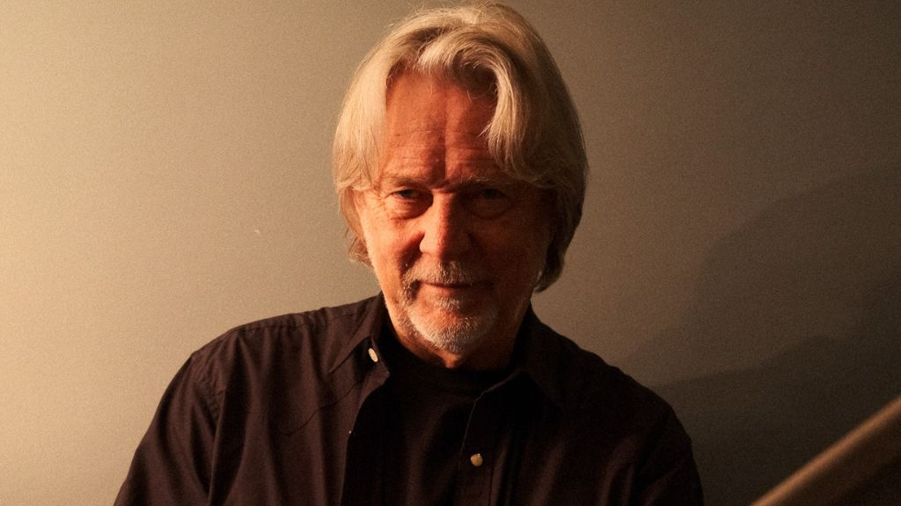

JD Hinton Cement’s “The Missing Moment” is a masterful example of a missed opportunity turned

The following feature is now included in our online magazine which is also available in print.
Issue #9
Online Magazine | Print MagazineWhat has always been a strength of JD Hinton’s songwriting has been a sensitivity to the underlying emotional import of a small gesture, and “Should Have Said Hello” may be Hinton’s most moving song yet. Embodying a look both parties knew was a mistake in a bar in New Orleans years ago, the song carries a sense of quiet in the dignity of a look that still hurts enough to be remembered. Hinton’s vocals are placed comfortably in a quiet arrangement that doesn’t overtack the spaces left open in a memory that doesn’t resolve.
There’s something timeless about the way Hinton presents this song. It speaks of the pause that makes classic American films so resonant, films like Paris, Texas or Before Sunrise, in which meaning is inferred from what wasn’t said. There’s also a sense of vintage Broadway romances in here, particularly in terms of how the melody approaches longing rather than slipping into the sentimental. The production approach earths this, lots of warmth, and space, and nothing hurrying along.
In particular, his acting experience is apparent in the natural way that the song develops. Each word is carefully positioned, not for show, but for believability. Those who appreciate the words of Townes Van Zandt or the more mellow sides of Nick Cave will immediately be at home here. Should have Said Hello is no attempt at a rewrite. It's content with the past and says more with that admission alone.
This dispatch was last updated on December 26, 2025